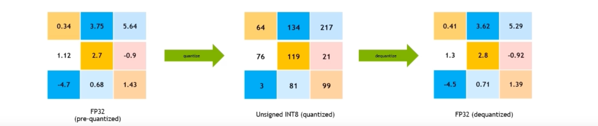
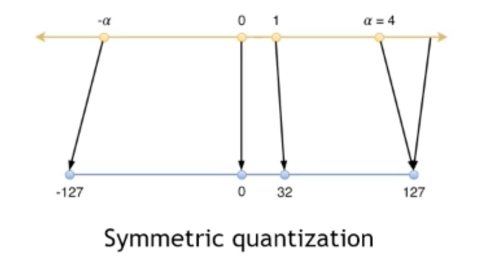
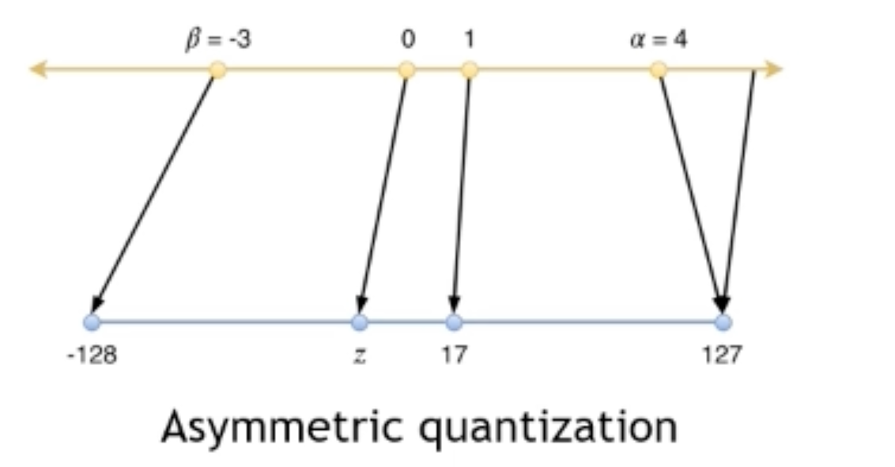
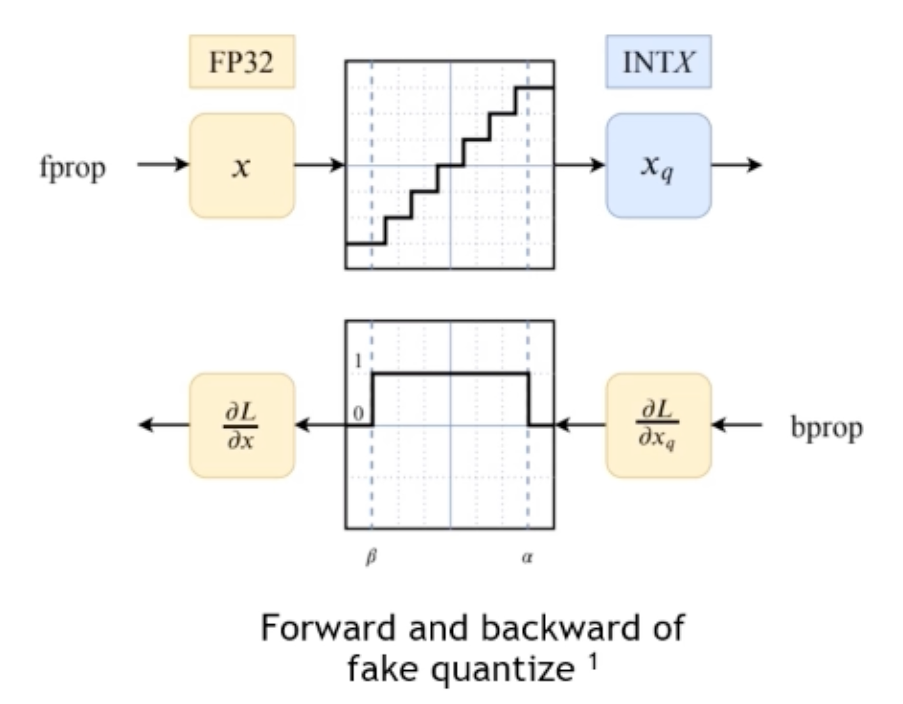

量化
Contents
量化¶
Uses low bit precision for parameter storage and enables low bit hardware operations to speed up inference
背景¶
Nowadays, the latency and throughput of inference is critical.
The complexity of models is increasing exponentially, such as BERT.
Why need quantization¶
Weights and activations are float numbers in a small range
通常，我们可以把FP32 -> FP16 但是Unlike FP32 -> FP16, it cannot be directly cast from FP32/FP16 to INT8. 因为模型权重都是小范围里面的浮点数，INT8的范围比较小，最小的精度间隔也很大，所以直接转换会有很大的精度损失
Dynamic range
Min positive value
FP32
-3.4*\(10^{38}\)-3.4*\(10^{38}\)
\(1.4*10^{-45}\)
FP16
-65504 ~ 65504
\(5.96*10^{-8}\)
INT8
-128 ~ 127
1
What is quantization¶
Quantize 量化: map the FLOAT values to discrete INT values using linear/non-linear scaling techniques.Quantized integer number \( \boldsymbol{Q}=\operatorname{clip}(\operatorname{round}(\frac{\boldsymbol{R}}{\boldsymbol{s}})+\boldsymbol{z})\)
R: high precision float number——浮点数
s: scale——把浮点数映射到整数的范围里
z: zero point——整体的偏移量
round: Round to integer
clip: clip to integer’s representative range
Dequantize 反量化: recover FLOAT values from INT values.\(R=s(Q-z)\)
Quantization object: convert from high precision to low precision with minimal information loss.
 
核心目标¶
难点：The generalization performance of the quantized model can significantly degrade
目标：Minimizing performance degradation while maintaining hardware efficiency
量化核心概念¶
Generally, quantization is implemented by linear transformation. 因为非线性的话会导致间隔发生变化
Symmetric vs. Asymmetric¶
定义
Symmetric (scaled): \(\boldsymbol{z}=0\), 从而 Quantized integer number \( \boldsymbol{Q}=\operatorname{clip}(\operatorname{round}(\frac{\boldsymbol{R}}{\boldsymbol{s}}))\), \(R=s(Q)\)
\([-\alpha, \alpha] \Leftrightarrow [-127,127]\) —— maps 0.0f in float to 0 in integer 大部分神经网络的权重都是对称的比如ReLU softmax等！
 Asymmetric (affine): \(\boldsymbol{z} \neq 0\), 从而 Quantized integer number \( \boldsymbol{Q}=\operatorname{clip}(\operatorname{round}(\frac{\boldsymbol{R}}{\boldsymbol{s}})+\boldsymbol{z})\), \(R=s(Q-\boldsymbol{z})\)
\([-\beta, \alpha] \Leftrightarrow [-128,127]\) —— maps 0.0f in float to z in integer 这样如果原始都是50～100，那对称的时候就会浪费很多范围！

对称量化更容易实现！Symmetric quantization is faster and easier to implement, and it usually not much accuracy difference. Genrally, symmetric quantization is preferred.
Multiply with symmetric quantization: $\( \boldsymbol{R}_{1} \boldsymbol{R}_{2}=s_{1} Q_{1} s_{2} Q_{2}=s_{1} s_{2} Q_{1} Q_{2} \)$
Multiply with asymmetric quantization: $\( \boldsymbol{R}_{1} \boldsymbol{R}_{2}=s_{1}\left(\boldsymbol{Q}_{1}-\mathrm{z}_{1}\right) s_{2}\left(\boldsymbol{Q}_{2}-\mathrm{z}_{2}\right)=s_{1} s_{2} \boldsymbol{Q}_{1} Q_{2}-s_{1} s_{2} \mathrm{z}_{2} Q_{1}-s_{1} s_{2} z_{1} Q_{2}+s_{1} s_{2} z_{1} z_{2} \)$
量化策略¶
Per-tensor quantization: all values in a tensor share a scale value 整个tensor用一个scale
Per-channel quantization: values in a channel share a scale value, different channels may have different scales 整个channel用一个scale（channel在非卷积网络里面的概念是weight某个维度的某个切片 是沿着输出维度做的，比如FC就是一个神经元一个scale）
原因：在同一层中 不同维度切片的权重的最大值很可能差异很大！同一个scale会让最大值小的切片信息损失很大，per-channel可以提高精度～
量化方法¶
Scale值的确定——PTQ与QAT¶
Post Training Quantization (PTQ)
The process is called calibration. 用校准数据在模型上做前向传播
Collect statistics of weights/activations through calibration data. 根据这些信息来确定scale
对数据要求小 更快 但是精度差
Quantization-Aware Training (QAT)
Collect or learn the scale values during training process.
Weights can be adjusted to adapt to quantization. 让模型适应量化的过程
速度慢，对数据要求打 但是精度高
Calibration methods For PTQ¶
Collect some statistics and determine the scale values through some calibration data during forward pass. Direct method: max calibrator
Collect absolute max values
scale \(=\max / 127.0 \mathrm{f}\) 只需要收集绝对值的最大值，除以127就行
Max calibrator works well on weights, but sometimes poorly on activations!
三种校准方法
Percentile calibrator
percentile_calibrate(input tensor, percentile){ collect histogram of input tensor; choose threshold value to keep percentile\% of values; # 比如99.99%当最大值从而去除离群值 calculate scale value from threshold; return scale;}MSE calibrator
让量化前后的\(\text { Mean square error= } \frac{1}{n} \sum_{i=1}^{n}\left(Y_{i}-\widehat{Y}_{i}\right)^{2}\)最小化
mse_calibrate(input tensor){ Collect histogram of input_tensor; for different threshold value { calculate MSE between input_tensor before and after quantization; } choose threshold that minimize MSE; calculate scale value from threshold; return scale;}
Entropy calibrator
让量化前后数据的概率分布差别最小，这里是用KL散度来衡量—— \(\text { KL-divergence between two distributions } P \text { and Q: } \sum P \log \frac{P}{Q}\)
entropy_calibrate(input_tensor){ Collect histogram of input_tensor; for different threshold value { calculate KL_divergence between input_tensor before and after quantization; } choose threshold that minimize KL_divergence; calculate scale value from threshold; return scale;}
BERT的效果
Quantization-Aware Training (QAT)¶
Collect statistics during training and get threshold and scale.
Learn thresholds as parameters (such as PACT). 把阈值当一个参数，反向传播的时候调整阈值以及模型里的权重
Do calibration and the threshold is fixed during training. 先确定阈值和scale值，然后训练的过程里面只需要调整模型权重让他们适应这些scale值
实现方式：Insert fake_quant_node into model graph
Forward pass：quantize to INT8 and dequantize to FLOAT in the node to simulate quantization这样输入数值的精度间隔就会调整，相当于模拟了整个量化的过程
Backward pass：straight through estimation (STE)：把阈值范围之内的梯度传播回去，之外的截取掉置为0
Gradients of values in the threshold ranges backward pass directly
Gradients of values outside the threshold ranges will be clipped to 0
整个训练过程里面 数据还是浮点数精度的，所以是伪量化

训练过程¶
PTQ和QAT类似，就是QAT多了一个finetune的过程调整权重
PTQ会用finetuned好的权重，因为这样才能得到最合适的scale
QAT来说机器会训练后续的权重，所以可以选用预训练的模型进行量化！具体操作是加载了pretrained之后对他进行一个finetune
在下游任务的时候大多数情况量化不会增大很多的误差 最后的模型就可以用于推断啦
怎么确定量化多少bit呢？¶
在伯克利的QBERT演讲里面Amir提到了，因为对参数的sensitivity不同，要对flat的loss landscape用更低的bit，sharp的loss landscape用更高的
然而问题来了——怎么quantify the sharpness of the loss landscape！
我们知道 Gradient是一个跟# of parameters同样大小的实数vector
而Second - derivative是一个matrix，大小是 |W|×|W|，二阶导衡量的是curvature（曲率），大的话说明曲线会sharper and shaper
gradient可以用L1或者L2 norm，但是二阶导数的大小该怎么衡量呢？答案是特征值（Eigen values）！
但这里注意要用matrix-free algorithm！因为weight的维度很高，如果直接求解的话，在矩阵inverse的时候肯定会遇到问题。目前有很多现成的blackbox：
Z. Yao*, A. Gholami*, Q. Lei, K. Keutzer, M. Mahoney, Hessian-based Analysis of Large Batch Training and Robustness to Adversaries, NeurIPS’18, 2018.
Z. Yao*, A. Gholami*, K. Keutzer, M. Mahoney, PyHessian: Neural Networks Through the Lens of the Hessian Spotlight at ICML’20 workshop on Beyond First-Order Optimization Methods in Machine Learning, 2020.
Code: https://github.com/amirgholami/PyHessian核心是用 Gradient back propagation
当我们知道了怎么量化，我们就可以对模型的不同层做不同的量化！这是因为一个size可能不能适应所有的！如果使用了不robust的方法，就会出现坑坑洼洼的平面！
BERT中的应用¶
FasterTransformer and demoBERT of TensorRT
demoBERT pattern 2 of TensorRT：residual connection的地方加了
FasterTransformer：multi-head一起做，然后FC里面全部也加了！
总结¶
To reduce the time related to memory
We need scale values for all activations after layer fusions! (i.e. all inputs of all kernels)
For some layers, even if their inputs are quantized, it is necessary to be calculated in higher precision.
Such as: gelu, softmax, layernorm （layernorm需要在高精度模式下计算）
We only want INT8 input/output（减少内存）, “dequantize” is needed in these kernels